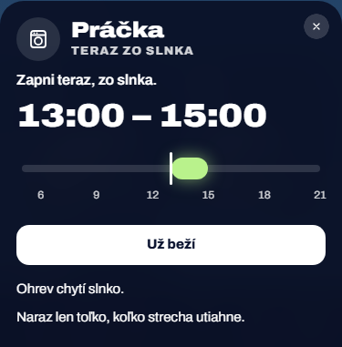
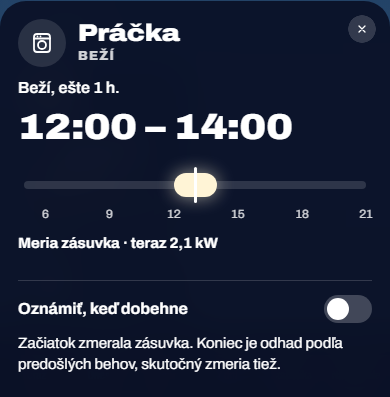
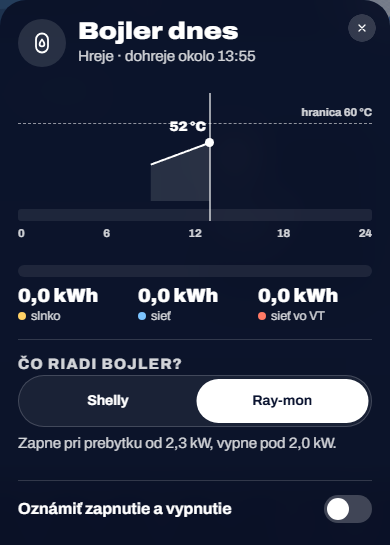
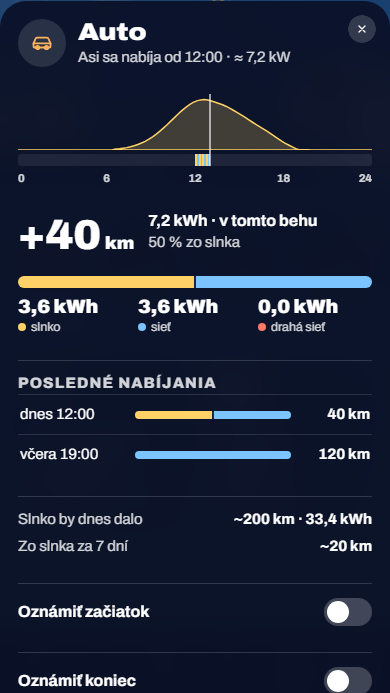
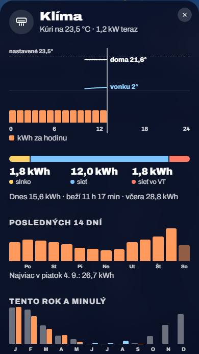

Panely spotrebičov na karte Teraz – jedna kostra
Návrh z 28. 11. 2026. Ťuknutie na dlaždicu otvorí panel – dnes má každý spotrebič vlastné poradie, vlastné slová a vlastnú os. Cieľ: to, čo majú spoločné (stav, príkon, deň na osi, energia podľa zdroja, behy, história, oznámenia), je v každom paneli na tom istom mieste a vyzerá rovnako. Čo je len jeho, ostáva – a dopĺňa sa tam, kde to dáva zmysel.
Rozhodnuté 28. 11. 2026: C + súčet
Možnosť C (dnešok hore, zvyšok zbalený). V riadku Energia dnes je vpravo súčet kWh – preto z riadku pod energiou zmizlo „Dnes … kWh“. Veľké číslo bojlera je teplota vody a pod ním čas dohriatia, klímy teplota doma. Drahé pásmo je všade „drahá sieť“. Worker ide samostatným PR po appke: appka musí fungovať aj so starším Workerom, miesta pre nové dáta (14 dní bojlera a auta, energia zo zásuvky) sa ukážu, až keď dáta prídu.
Snímky „dnes“ sú z e2e testov (fixtures, pevný čas 13:00), nie z telefónu. Čísla v náhľadoch sú vymyslené, aby bolo vidno všetky časti. Žltá čiarkovaná čiara v náhľadoch je 82 % výšky S22 – po nej sa panel musí posúvať.
Ako to vyzerá dnes





Čo je dnes rozhádzané
| Čo | Práčka / sušička / umývačka | Bojler | Auto | Klíma |
|---|---|---|---|---|
| Nadpis | Práčka | Bojler dnes | Auto | Klíma |
| Riadok pod nadpisom | VEĽKÝMI PÍSMENAMI („TERAZ ZO SLNKA“) | normálne („Hreje · dohreje okolo 13:55“) | normálne, s príkonom | normálne, s príkonom |
| Príkon teraz | pod osou „Meria zásuvka · teraz 2,1 kW“ (len zásuvka) | chýba (zásuvka ho pritom meria) | v riadku „≈ 7,2 kW“ | v riadku „1,2 kW teraz“ |
| Veľké číslo | od–do | žiadne (teplota len v grafe) | +40 km | žiadne |
| Os dňa | 6–21, hrubý svietiaci úsek | 0–24, tenký pás | 0–24, tenký pás | 0–24, stĺpce kWh |
| Energia podľa zdroja | žiadna | dnes | len posledný beh | dnes |
| Drahé pásmo slovom | – | „sieť vo VT“ | „drahá sieť“ | „sieť vo VT“ |
| Behy | „dobehlo“ hore nad časom | Behy dnes – zbalené | Posledné nabíjania – rozbalené | – |
| Dlhšie obdobie | – | – | súčet 7 dní riadkom | 14 dní stĺpce + rok |
| Oznámenia | zásuvka: prepínač pod príkonom; bez zásuvky v bublinke po „Nastaviť“ | prepínač úplne dole | dva prepínače pred poznámkou | – |
| Vysvetlenie | prečo + „Naraz len toľko…“ dole | popis riadenia v strede | poznámka „asi“ úplne dole | Podrobnosti zbalené |
Kostra: deväť miest v pevnom poradí
Poradie ide podľa otázok, s ktorými človek na dlaždicu ťuká: čo to robí teraz → kedy a koľko → ako išiel deň → čo s tým môžem urobiť → koľko energie a odkiaľ → ako je to zvyčajne → nastavenie → prečo. Miesto, ktoré spotrebič nemá, sa preskočí, poradie ostatných sa nemení. Zelené nové je doplnené, žlté Worker potrebuje zmenu Workera (ostatné appka už má).
| Miesto | Práčka / sušička / umývačka | Bojler | Auto | Klíma |
|---|---|---|---|---|
| 1Hlava ikona, meno veci, stav · príkon |
Práčka Teraz zo slnka · 2,1 kW (len so zásuvkou) |
Bojler (bez „dnes“) Hreje zo slnka · 2,1 kW |
Auto Asi sa nabíja od 12:00 · ≈ 7,2 kW |
Klíma Kúri na 23,5 °C · 1,2 kW |
| 2Veľké číslo + veta to najdôležitejšie |
13:00 – 15:00 veta z dlaždice |
52 °C (bez teplomera „do 13:55“) Dohreje okolo 13:55. |
+40 km 7,2 kWh v tomto behu, polovica zo slnka. |
21,6 °C doma Vonku 2 °C, nastavená 23,5 °C. |
| 3Deň na osi 0–24 hore „prečo vtedy“, dole pás behov |
krivka slnka + pás: dobehnuté plné, plán obrysom | teplota vody (bez teplomera krivka slnka) + pás, dohriatie obrysom | krivka slnka + pás nabíjaní | teploty + stĺpce kWh za hodinu (tie sú jej pás) |
| 4Akcia | Už beží / kolieska / Nastaviť | – | – | – |
|
5Energia dnes pásik + slnko / sieť / drahá sieť + riadok |
zásuvka: zmerané Worker bez zásuvky: ≈ odhad z typického programu |
ako dnes + včera v riadku | dnes (nie posledný beh – ten je v 2) | ako dnes |
| 6Behy riadok: kedy · pásik · číslo |
dnes a predtým (presunuté zhora) | Behy dnes | Nabíjania (km) | – (beží celý deň) |
| 7Posledných 14 dní stĺpce podľa zdroja |
behy za deň | kWh za deň Worker | km za deň Worker (drží 7 dní) | ako dnes + rok a minulý (len klíma) |
| 8Nastavenie riadenie a oznámenia |
Oznámiť, keď dobehne | Čo riadi bojler? + Oznámiť zapnutie a vypnutie | Oznámiť začiatok / koniec | – (nič sa nastaviť nedá) |
| 9Prečo a podrobnosti | prečo práve vtedy, „Naraz len toľko…“, čo meria zásuvka | čo znamená riadenie, kedy zapne / vypne | prečo „asi“ | Podrobnosti (Wi-Fi, firmvér…) |
Pravidlá, ktoré platia vo všetkých
- Nadpis = meno veci, nie stav ani režim: Práčka, Bojler, Auto, Klíma. Režim klímy je v riadku pod ním.
- Riadok pod nadpisom normálnym písmom, príkon teraz vždy na jeho konci za bodkou – keď ho appka vie.
- Os vždy 0 – 24 s rovnakými značkami 0 6 12 18 24 a čiarkou teraz. Plné = stalo sa, obrys = plán.
- Farby zdrojov všade rovnaké: slnko zlaté, sieť modrá, drahá sieť červená. Slovo vždy „drahá sieť“ (nie „sieť vo VT“).
- Nadpisy častí rovnakým štýlom a rovnakými slovami: Energia dnes, Behy, Posledných 14 dní, Nastavenie, Prečo.
- Oznámenia sú vždy v časti Nastavenie, nikdy uprostred panela.
Možnosti usporiadania
Z – len zladiť vzhľad
Poradie častí ostane, aké je. Zjednotí sa len nadpis, riadok pod ním, príkon v riadku, os 0–24, slovo „drahá sieť“ a oznámenia vždy na koniec.
- najmenej práce, skoro len CSS a texty
- nič nové, nič sa nepresúva
- poradie ostane rôzne – energiu raz hľadáš pod grafom, raz pod číslom
- nič sa nedopĺňa (bojler bez príkonu, práčka bez energie)
A – kostra, všetko rozbalené
Deväť miest pod sebou, všetko viditeľné, posúva sa prstom.
- nič nie je schované, žiadne ťuknutie navyše
- rovnaké poradie všade
- bojler, auto a klíma sú na S22 dve až tri obrazovky dlhé
- nastavenie a oznámenia sú úplne dole, ďaleko
B – kostra so záložkami
Pod hlavou prepínač Dnes · 14 dní · Nastavenie, rovnaký vo všetkých paneloch.
- krátke panely, skoro bez posúvania
- záložka sa hľadá vždy rovnako
- nový ovládací prvok; Späť musí riešiť aj záložku (krok navigácie?)
- práčka a klíma majú záložky skoro prázdne
- behy a 14 dní nevidno naraz s dneškom
C – kostra, dnešok hore, zvyšok zbalený odporúčam
Miesta 1 – 5 (teraz a dnes) sú vždy otvorené a vyzerajú v každom paneli rovnako. 6 – 9 sú riadky, ktoré sa ťuknutím rozbalia, s rovnakými menami a s číslom vpravo (počet behov, „vypnuté“…).
- prvá obrazovka je vo všetkých rovnaká – to, čo človek hľadá najčastejšie
- rozbaľovanie už appka má (Behy dnes, Podrobnosti), nič nové na ovládanie
- krátke panely, dlhé veci (rok klímy) nezavadzajú
- oznámenia o ťuknutie hlbšie (riadok ukáže „zapnuté / vypnuté“)
- viac práce ako Z – presuny v HTML, testy e2e
C – všetky štyri panely
Rovnaké miesta majú rovnaké číslo (zelený krúžok vľavo).
Pre porovnanie: Bojler v Z, A a B
Čo je nové a odkiaľ to vezme
| Čo | Kde | Dáta |
|---|---|---|
| Príkon bojlera v riadku | Bojler 1 | appka ho má (bojler.w z hlásenia zásuvky), len ho neukazuje |
| Teplota vody ako veľké číslo | Bojler 2 | appka ju má (teplomer), dnes len v grafe |
| Teplota doma ako veľké číslo | Klíma 2 | appka ju má, dnes len popiskou v grafe |
| Krivka slnka nad osou spotrebiča | Práčka 3 | appka ju má (tá istá výroba dňa ako v paneli Auto) |
| Energia behu práčky | Práčka 5 | bez zásuvky odhad z typického programu (Plán dňa ho pozná); zásuvka posiela počítadlo energie, Worker ho má v behu, no do spoločných behov ho nedáva – treba Worker |
| Energia auta dnes | Auto 5 | appka ju má (behy z /auto), dnes ráta len posledný beh |
| Bojler včera a 14 dní | Bojler 5, 7 |
Worker drží energiu bojlera po dňoch v histórii (hd:), appke ju dnes neposiela –
treba Worker (napr. 14 čísel navyše v /bojler-stav)
|
| Behy práčky za 14 dní | Práčka 7 | appka ich má (história behov v telefóne, spoločné behy) |
| Auto za 14 dní | Auto 7 |
Worker drží nabíjania 7 dní (AUTO_NABIJA.dni) – zvýšiť na 14,
alebo pri aute ukázať 7 dní
|
| Plán obrysom na osi | všetky 3 | len kreslenie; plán bojlera a spotrebiča appka pozná |
Klíme som oznámenia nedopĺňal: appka ju len sleduje a push by potreboval novú logiku vo Workeri (kedy oznámiť – zapnutie? výpadok spojenia?). Ak ich chceš, je to samostatná téma.
Otázky na teba
- Ktorá možnosť: Z, A, B alebo C?
- Veľké číslo bojlera: teplota vody (navrhujem), alebo čas dohriatia?
- Klíma: veľké číslo teplota doma (navrhujem), alebo príkon / kWh dnes?
- Slovo pre drahé pásmo: „drahá sieť“ (navrhujem, ako pásik dlaždice), alebo „sieť vo VT“?
- Časti so zmenou Workera (bojler 14 dní, energia zo zásuvky, auto 14 dní) robiť hneď, alebo najprv len appku?